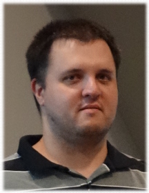

Automating stable-kernel creation
At LinuxCon North America 2016 in Toronto, Sasha Levin presented some of the tools and techniques he uses to maintain stable kernels. He maintains the 4.1 and 3.18 stable kernels and wanted to make his life easier, so he started automating the process. While creating a stable kernel will never be a fully automatic task, he has developed some tools that can help.
Stable trees are just like more -rc cycles, he said with a grin. The intent is that stable kernels only get small changes (< 100 lines) from the mainline that fix a non-theoretical bug that users are running into. The criteria is pretty strict, but an exception is made for new device IDs; those are normally one-line changes that simply enable new hardware using the existing code. Stable kernels are typically supported for around ten weeks for the period between kernel releases.

There are also long-term support (LTS) stable kernels. Those follow the same rules, but continue to get support for much longer—typically two years or more. As time passes, fewer commits are made to the LTS kernels; since they don't add new features, they also don't add new bugs. But, on the other hand, fixing the bugs that are found is harder, since they often must be backported rather than simply cherry-picking commits from the mainline.
That means that the rate of LTS stable patches goes down, but each patch takes more time to handle. In addition, more people depend on those trees for servers and other critical infrastructure, where they don't want to change the kernel (and, in particular, update to a new major version) frequently. So it is important that those kernels are as reliable as they can be.
So, that "doesn't sound hard", Levin said, just look at every patch that goes into the mainline, decide if it is a fix, and add it to the tree if it is. But, of course, there are too many patches—around eight patches per hour, every hour of every day.
Even if someone could look at all those patches, it is not always obvious whether they fix a real problem or not. There is also the chance that Levin or some other stable maintainer misses a patch that does fix something. If no one is using that functionality, that isn't much of a problem, but if it is a critical security fix, that can be serious. On the flip side, if he takes a fix that he shouldn't have, it might introduce a security hole. For example, a few weeks earlier he took an XFS patch into the wrong kernel version and introduced a local privilege escalation.
Let's automate
So, "let's automate". He finds most of the patches needed for his trees by looking for "stable@" addresses or "Fixes" tags in the mainline commits. His first step, then, was to write a script that grabbed the logs and looked for those strings. But that was not enough.
As an example, he pointed to a commit, which is a simple fix for a minor security bug (an information leak), but was not marked for stable, nor with a "Fixes" tag. So he can't rely on those alone to find the patches that should be added to his tree(s).
Another technique he uses is to search for certain keywords and phrases. Strings like "fix", "NULL dereference", "buffer overflow", and so on might indicate a commit he should look at more closely. He has around twenty of these strings that he looks for now, though he adds to the list occasionally.
After that, he started "shamelessly stealing" Greg Kroah-Hartman's work. So Levin has a script, stable-show-missing, that looks at other stable trees to see what is missing in one or the other. Are there commits in Kroah-Hartman's (or another stable maintainer's) tree that are not in his? Or vice versa?
In a continuation of the "shameless stealing", he has a script that looks for backports of fixes into other stable trees. "Backports are evil", he said, and should be avoided, but it is important not to have multiple backports of the same fix in various trees. If there is only one backport, it may be wrong, but at least all of them are the same and a single fix can be applied to all of them if needed. For example, if a fix has been backported from 4.8 into 4.4, he can run his tool to find and show the backported patches; if they apply cleanly to his tree, he can just adopt them.
Another tool, stable-deps, will give a list of commits that need to be applied before a particular fix can be applied. That list can be used to find stable-candidate commits that have been missed along the way. It can also show whether a fix is for a bug in some big feature that has been introduced since the kernel version he is working with. That makes it easier to drop those kind of fixes without doing costly research on the mailing list.
When looking at a specific patch, there is always the question of whether it truly should be applied or not. There are multiple rules in the stable_kernel_rules.txt file; the first five are straightforward, but the rest of it is "lawyer talk", he said with a chuckle. In any case, his common check_relevant() function will find some of the obvious violations , though of course it is not perfect.
Finding the "stable@" address in a commit is a good indicator that it is stable material, but is no guarantee that it truly is. On the other hand, there may not be a stable indicator, but the fix should be applied. Even if there is a "Cc: stable@vger.kernel.org" line in the commit, there are multiple different ways that "tag" is formed. Some have angle brackets or other formatting differences; there is also, perhaps, a version indication (which can also come in a variety of formats).
These version tags (e.g. "Cc: stable@vger.kernel.org # v3.4+") are meant to help the stable maintainers quickly determine whether they should be interested in the patch or not. But there is no standard way of specifying the applicable versions, so check_relevant() tries to parse the version specification and to determine which kernel versions it actually corresponds to.
One problem he has encountered is the "fix for a fix". The "Fixes" tag refers to a commit that has been fixed, but that only works for mainline commit IDs. Once a fix has been cherry-picked into a stable tree, it will have a different commit ID than the corresponding change in the mainline. So a fix that references a mainline commit that has been cherry-picked into a stable tree is easy for a stable maintainer to miss. check_relevant() looks for that as well.
There are certain patch authors who are themselves flags for a patch that should get stable consideration. He mentioned Linus Torvalds and David Miller as two maintainers that mostly just fix bugs, often important bugs. While Torvalds "tries to hide" security problems, the fact that he has authored a particular change is a big sign that it is significant.
Putting all of that together results in a stable-steal-commits tool. It can be run on upstream or various stable maintainers' trees and will create a new tree with the changes that are found with his tools. It is not something that can be shipped, obviously, since it needs lots of validation, but it is a starting point. In particular, it is important to run stable-show-missing and look carefully at the results. Running stable-steal-commits takes about 30 minutes on an -rc release after -rc1; it takes around two hours for an -rc1 release.
When he is validating the tree that is created, he often finds that some patches need to be yanked out of the tree or that other patches need to be pulled in. That is not something that Git handles easily, which is why Kroah-Hartman uses quilt to manage stable-tree patches. Levin has created stable-yank and stable-insert to handle those kinds of problems. They are currently being used quite a bit, he said; he is trying to convince Kroah-Hartman to drop quilt in favor of them.
He now has a GitHub repository containing multiple tools that he uses for his stable kernel work. He also introduced his scripts in a post to the linux-kernel mailing list nearly a year ago.
Levin showed a rant from Dave Chinner that complained about having to make the same set of comments for multiple stable trees and maintainers. He wanted to see more coordination between the stable maintainers so that he and others could simply make one set of comments that would (somehow) propagate to all of the other stable trees that might also cherry-pick the commit(s) in question.
To help fill in that "somehow", Levin has come up with stable "notes". It will grab reviews and other comments from the mailing list and store them as notes on the commits in a Git tree. Other stable maintainers can add Levin's tree as a remote repository and configure Git to consult the notes that he is adding from stable reviews. That will help reviewers and maintainers so that they do not need to do multiple reviews for multiple stable releases; it will also help stable maintainers coordinate more easily.
The last piece of the puzzle is testing. Stable kernel candidates need to be tested before they can be released. He does local build tests and boots the kernels inside a virtual machine, but there is much more testing going on. The 0-day testing service and kernelci.org both test on every commit made to his Git repository. To him, it seems like these groups have "unlimited computing power or something" and their testing makes his life much easier. It is much better to find out about problems during the review cycle for the stable kernel rather than after it has been released.
[I would like to thank the Linux Foundation for travel assistance to attend LinuxCon North America in Toronto.]
| Index entries for this article | |
|---|---|
| Kernel | Releases/Stable updates |
| Conference | LinuxCon North America/2016 |